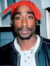

Drake, wiens echte naam Aubrey Drake Graham is, is een Canadese rapper, singer-songwriter en acteur. Hij werd geboren op 24 oktober 1986 in Toronto, Ontario, Canada. Drake is een van de meest succesvolle en invloedrijke hedendaagse artiesten in de muziekindustrie. Drake begon zijn carrière als acteur in de populaire Canadese tv-serie "Degrassi: The Next Generation", waarin hij de rol van Jimmy Brooks speelde. In 2006 bracht hij zijn eerste mixtape uit, genaamd "Room for Improvement". Zijn muzikale doorbraak kwam echter in 2009 met de release van zijn mixtape "So Far Gone", waarop hits stonden zoals "Best I Ever Had" en "Successful". In 2010 bracht Drake zijn debuutalbum "Thank Me Later" uit, dat meteen een groot commercieel succes was en de nummer één positie bereikte in de Amerikaanse hitlijsten. Hij heeft sindsdien meerdere albums uitgebracht, waaronder "Take Care" (2011), "Nothing Was the Same" (2013), "Views" (2016), "Scorpion" (2018) en "Certified Lover Boy" (2021). Deze albums hebben wereldwijd miljoenen exemplaren verkocht en bevatten hits zoals "Hotline Bling", "One Dance" en "God's Plan".
Naast zijn muzikale successen staat Kanye West ook bekend om zijn onvoorspelbare gedrag en uitgesproken persoonlijkheid. In 2018 kondigde hij aan dat hij zijn artiestennaam had gewijzigd naar "Ye", een bijnaam die hij al langere tijd gebruikte. Hij verklaarde dat "Ye" een verkorte versie is van zijn volledige naam Kanye en ook een verwijzing naar het woord "ye", dat in de Bijbel wordt gebruikt en "jij" of "jou" betekent. Kanye West gaf aan dat hij de naamswijziging doorvoerde vanwege de spirituele betekenis die het voor hem had. Hij voelde dat het zijn innerlijke identiteit en connectie met zijn publiek beter weerspiegelde. Na de aankondiging van de naamswijziging bracht hij zijn album "Ye" uit, dat in juni 2018 verscheen. Het album kreeg gemengde beoordelingen maar behaalde commercieel succes en debuteerde op de eerste plaats in de Amerikaanse Billboard 200-hitlijst. Het veranderen van zijn artiestennaam naar "Ye" was een van de vele artistieke verschuivingen en onconventionele acties van Kanye West. Hij staat erom bekend dat hij zichzelf steeds opnieuw uitvindt en experimenteert met nieuwe geluiden en stijlen in zijn muziek. Deze evolutie heeft bijgedragen aan zijn reputatie als een innovator en pionier in de muziekindustrie.
Tupac Shakur, ook bekend als 2Pac, was een invloedrijke Amerikaanse rapper, acteur en dichter. Hij werd geboren op 16 juni 1971 in East Harlem, New York City. Tupac groeide op in een omgeving met armoede en geweld, maar ontwikkelde al op jonge leeftijd een interesse in kunst en literatuur. Tupac begon zijn muzikale carrière als lid van de hiphopgroep Digital Underground, waar hij als achtergrondrapper en danser optrad. In 1991 bracht hij zijn debuutalbum "2Pacalypse Now" uit, dat veel aandacht trok vanwege zijn rauwe teksten over sociale onrechtvaardigheid en politiegeweld. Tupac's volgende albums, zoals "Strictly 4 My N.I.G.G.A.Z..." en "Me Against the World", werden zeer geprezen en gingen miljoenen keren over de toonbank.